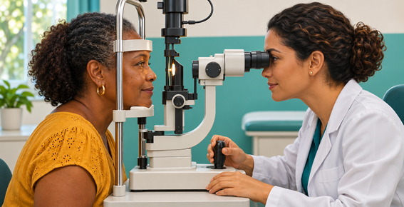

Cuidar da visão também é cuidar da saúde. Este site reúne informações em linguagem simples sobre a prevenção da perda de visão, a importância dos exames oftalmológicos e o papel do diagnóstico precoce. Com base nos resultados preliminares da amostra do Censo 2022, divulgados em 2025, o IBGE estimou que cerca de 7,9 milhões de pessoas de 2 anos ou mais no Brasil possuem muita dificuldade para enxergar ou não conseguem enxergar de modo algum, mesmo com o uso de óculos ou lentes de contato. As perguntas sobre deficiência faziam parte do questionário ampliado, aplicado a domicílios selecionados aleatoriamente. A partir dessas respostas, o IBGE calculou a estimativa para o país. Usar óculos ou lentes de contato, por si só, não significa ter deficiência visual. Esses recursos podem corrigir alterações como a miopia e o astigmatismo. Em 2026, a Organização Mundial da Saúde informou que pelo menos 2,2 bilhões de pessoas no mundo têm algum comprometimento da visão de perto ou de longe. Em pelo menos 1 bilhão desses casos, o comprometimento poderia ter sido prevenido ou ainda não havia recebido o cuidado necessário. Algumas doenças oculares, como o glaucoma, podem avançar sem sintomas perceptíveis no início. O exame oftalmológico pode ajudar a identificar essas alterações mais cedo, e o tratamento adequado pode reduzir o risco de perda de visão. Neste artigo, vamos falar sobre exames oftalmológicos, proteção dos olhos no dia a dia e pausas no uso de telas. Você também vai encontrar informações sobre glaucoma, diabetes e saúde dos olhos, sinais de dificuldade para enxergar na infância e situações que exigem atendimento imediato, como acidentes com os olhos e perda súbita da visão. Aviso para o site Este conteúdo tem caráter educativo e informativo. Ele não substitui uma consulta nem deve ser usado como orientação médica. Para esclarecer dúvidas sobre sua saúde ocular ou receber orientações individuais, procure um oftalmologista. Fontes consultadas IBGE. Censo Demográfico 2022 — Pessoas com deficiência e pessoas diagnosticadas com transtorno do espectro autista. Resultados preliminares da amostra, publicados em 2025. Fonte do dado sobre deficiência visual no Brasil. https://www.ibge.gov.br/biblioteca/visualizacao/livros/liv102178.pdf Organização Mundial da Saúde (OMS). Cegueira e comprometimento da visão. Publicado em 2026, em inglês. Fonte dos dados mundiais. https://www.who.int/news-room/fact-sheets/detail/blindness-and-visual-impairment Ministério da Saúde. Glaucoma. Biblioteca Virtual em Saúde. Fonte da informação sobre a ausência de sintomas no início da doença. https://bvsms.saude.gov.br/glaucoma/